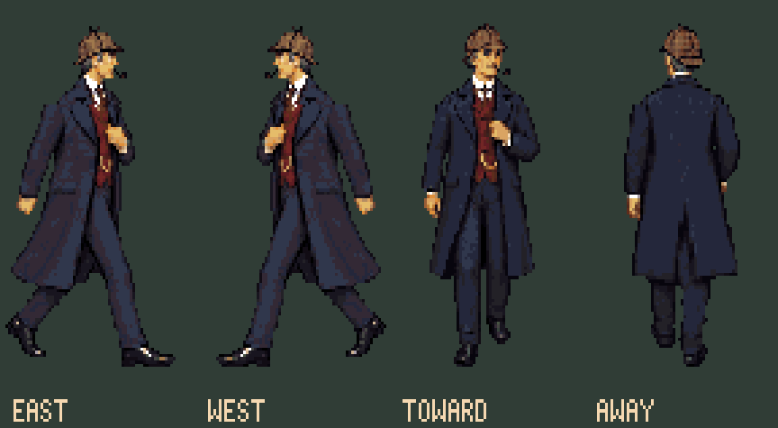
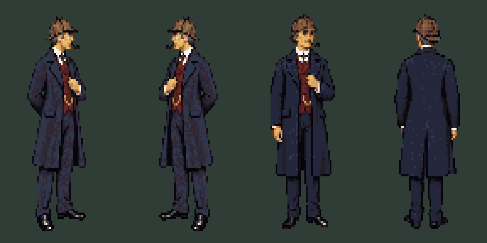
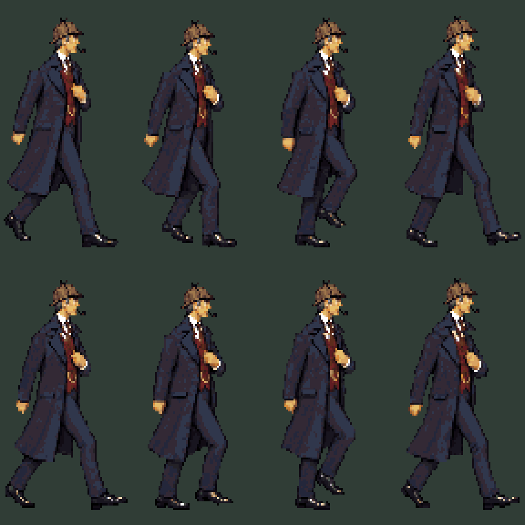
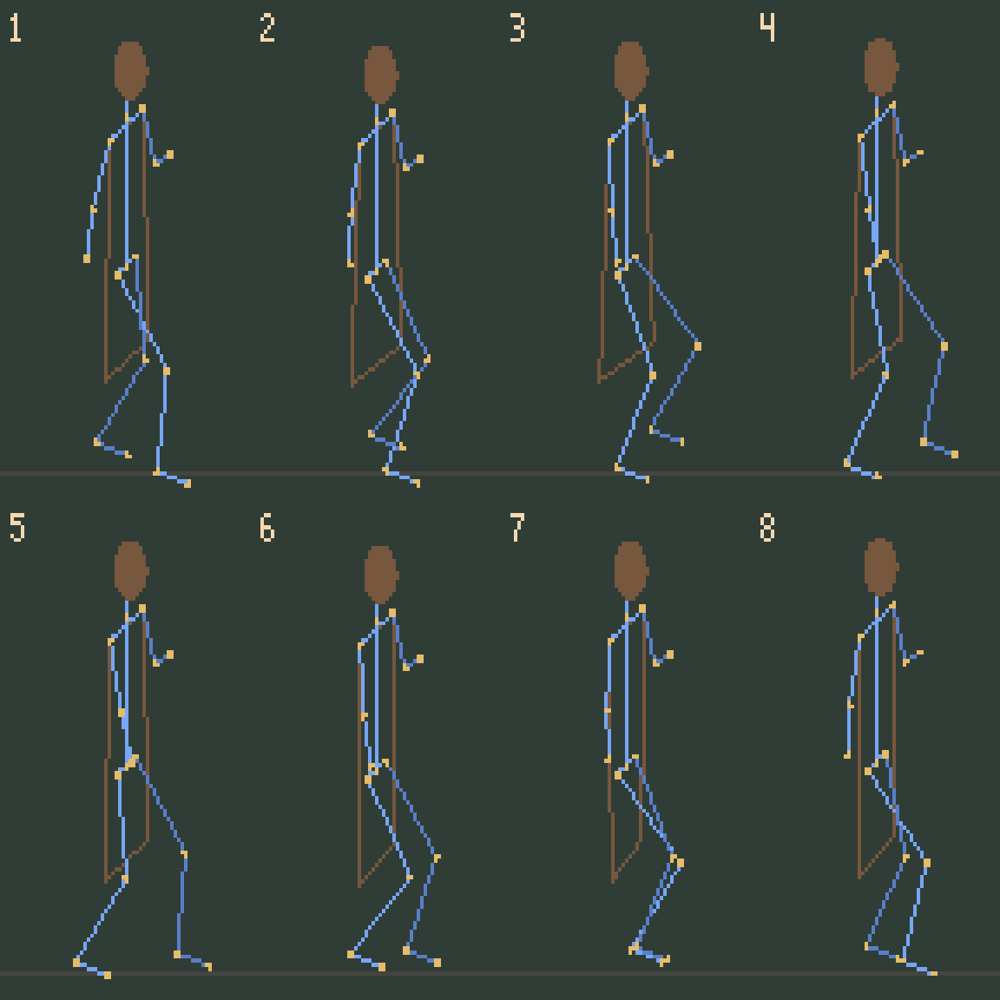

Not for integration. Dancing motion and disconnected shoulders/torso failed review. Failure analysis and revised workflow. These assets remain here for comparison.
Complete body-and-coat pose drawings, fixed directional heads, and the exact east standing master. Cel 0 stands; cels 1–8 form the walk.
Loading…
Historical preview: 40px/s horizontal and 20px/s vertical. This timing suggestion is withdrawn; speed was not derived from foot contact.
West mirrors east about the fixed anchor. Toward/away have their own standing and walking drawings. The long coat moves with the legs.


The source sheets are registered with one scale each. The fixed head/collar patch meets separately drawn bodies at an inconsistent structural seam. It failed the shoulder/torso continuity review.

These are pre-drawing guides. They are deliberately shown separately from the final artwork: they are not a recovered skeleton or an automatic anatomy check.
Blender construction · East Pixelorama · West · Toward · Away